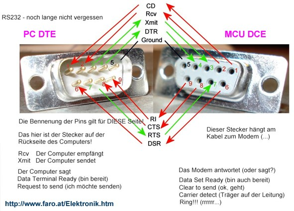

Data Transmission Topics
Analog and Digital Data Transmission
- Analog data transmission involves sending data in the form of continuous signals.
- Digital data transmission uses discrete signals, representing data in binary format.
- Digital transmission is generally more reliable and can be encrypted for security.
Parallel Transmission vs. Serial Transmission
- In parallel transmission, multiple bits are sent simultaneously over multiple channels.
- In serial transmission, bits are sent sequentially over a single channel.
- Parallel transmission is faster over short distances, while serial transmission is more reliable for longer distances.
DTE and DCE Interface
- DTE (Data Terminal Equipment) refers to devices like computers that convert user information into signals.
- DCE (Data Communication Equipment) includes modems and other devices that facilitate data transfer.
- The DTE-DCE interface establishes the connection between the two types of equipment.
Transmission Rate
- Transmission rate refers to the speed at which data is transmitted over a communication channel.
- It is typically measured in bits per second (bps).
- Factors affecting transmission rate include bandwidth, signal-to-noise ratio, and transmission medium.
Modem Introduction
- A modem (modulator-demodulator) is a device that converts digital data from a computer into analog for transmission over telephone lines.
- It also converts incoming analog signals back into digital data for the computer.
Modem Standards
- Modem standards define the protocols for data transmission between modems.
- Common standards include V.92, V.90, and V.34, which specify various data rates and features.
- Standards ensure compatibility between different modem brands and models.
Transmission


Modem stds
DTE and DCE

RS232
{kind=link}